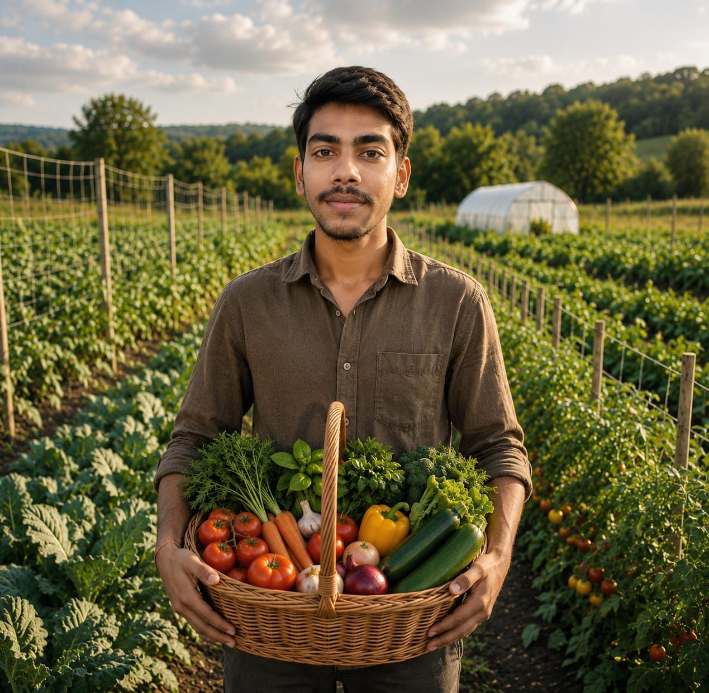

Vijay Organic Farming was born out of a deep reverence for the land and a vision to replace synthetic pesticides with regenerative farming methods that restore the natural health of the earth.
What started over a decade ago as a modest family farm in Andhra Pradesh has grown into a beacon of sustainable agriculture. We nourish our crops using organic compost, natural neem pest repellents, cow manure bio-fertilizers, and traditional crop rotation methods that protect living soil micro-flora.
Only heirloom and open-pollinated natural seeds.
Strictly zero toxic sprays, weedicides, or growth hormones.
Dedicated to cultivating clean food while preserving ecological balance for generations to come.
Our vision is to transform agricultural lands into thriving biodiverse ecosystems and make certified organic food affordable and accessible to every household across the nation.
How Vijay Organic Farming evolved over 15 years of dedication.
Founded our initial 5-acre organic farm plot with zero chemical inputs and traditional native seed preservation.
Expanded cultivation to over 30 acres, introducing drip irrigation systems and solar-powered farm wells.
Implemented multi-cropping, vermicomposting units, and natural beehive pollination programs.
Delivering daily farm-fresh organic harvest directly to over 250+ happy families and farm markets.